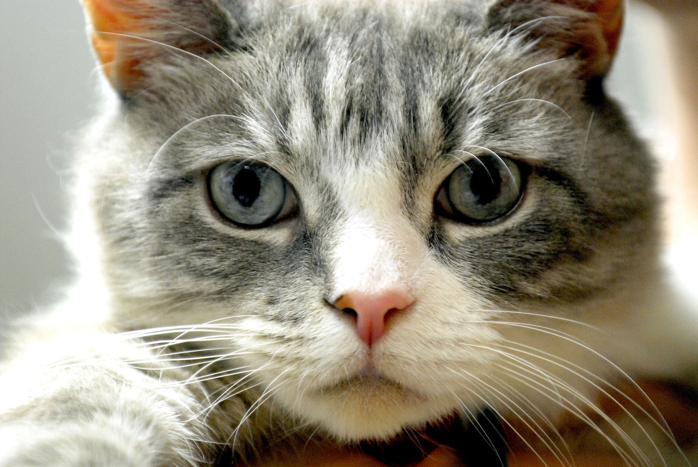

Nome Utente
Gatto:Il gatto domestico (Felis catus Linnaeus) è un mammifero carnivoro appartenente alla famiglia dei felidi.
Nome utente

Dagli esperimenti sui gatti domestici, si può dedurre che la loro memoria di lavoro per la permanenza degli oggetti, uno dei fattori essenziali dell'intelligenza, è di circa 16 ore.
Nome utente

Diversi studi hanno evidenziato come la compagnia di un gatto possa aiutare le persone con problemi psichici e le persone sole o stressate, abbassandone la tensione.